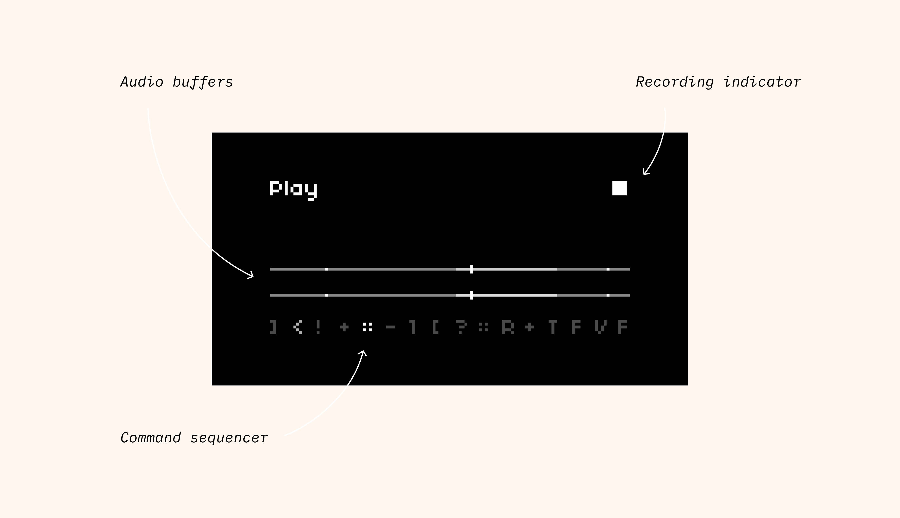

Booker
With the rise of major corporate aggregators like Airbnb, Kayak, and Booking.com, local and provincial tourism destinations here in Canada have struggled to remain competitive in the broader tourism market. Destination marketing organizations (or DMOs) and the tourism businesses they promote have long been hampered by legacy software that makes a pivot to conversion marketing difficult.
Tourism Technology Co. — the company I helped co-found and for which I serve as Chief Product Officer — aims to put more power back in the hands of these smaller tourism markets. Our main app, Whereabouts, is a member management tool that connects DMOs and tourism businesses and gives side the features they need to share data and collaborate on conversion marketing initiatives.
One of the key features we’ve built into Whereabouts for tourism businesses specifically is a light-weight, low-fee, and highly flexible booking engine we call Booker. Our goal is to give these independent businesses software that’s easy to use and stays out of the way — all while helping them work towards financial independence.

Booker went through a few iterations since 2020, and each one was informed by extensive user interviews, feedback, and beta testing. We used all of this user data to continually refine and simplify the Booker product; given how short on time these tourism businesses are, it’s important that we build software that solves real-world problems for them — and quickly.
A business’s journey with Booker starts in Whereabouts. Here, they can log in and use the Booker Admin app to easily create sellable products like accommodations, equipment rentals, guided tours and more. We aim to keep the data models for each product simple, meaning that business owners can create and get their products embedded online within a matter of minutes.
Compass
Compass is audio sampling software that I wrote for an open-source sound computer called norns. The app itself was written in Lua, but the fun really started when it came time to coding and designing a multi-page interface using only a 128x64 pixel display, 3 buttons, and 3 encoders.

Compass, at its core, is an audio looper, but with a twist: it's driven by a sequencer, and for each step in the sequence, you can select various commands that manipulate and mangle the incoming audio in all sorts of creative and unpredictable ways — speeding it up or slowing it down, reversing playback, jumping to different points in the audio stream, changing the speed of the sequencer itself...
Key for me was creating a user interface — using very limited inputs! — that would be intuitive, fast, and encourage happy accidents. One of the breakthroughs I had while developing the UI was settling on the idea to include basic documentation in the app itself, providing users with a mini-manual of sorts they have access to without ever having to stop making music.
 Interface overviewWistia Podcast Player
My last project at Wistia as product designer was to design a new audio player to support the company's shift into podcasting. Our goal was to ship a powerful, embeddeable audio player with rich podcasting features — all without sacrificing the simplicity and elegance of Wistia's much-admired video player. Below is a video I recorded detailing its features and functionality.
Many small, independent tourism businesses are often reticent to embrace new tech solutions — and with good reason. They’re bloated, complex, and end up taking time away from doing what they love most: actually running a tourism businesses on a day-to-day basis. Booker’s goal, besides being a powerful conversion engine, is to give these businesses time back in their day.